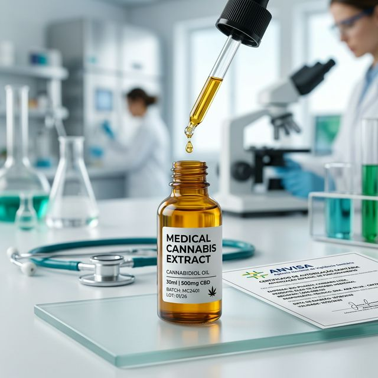
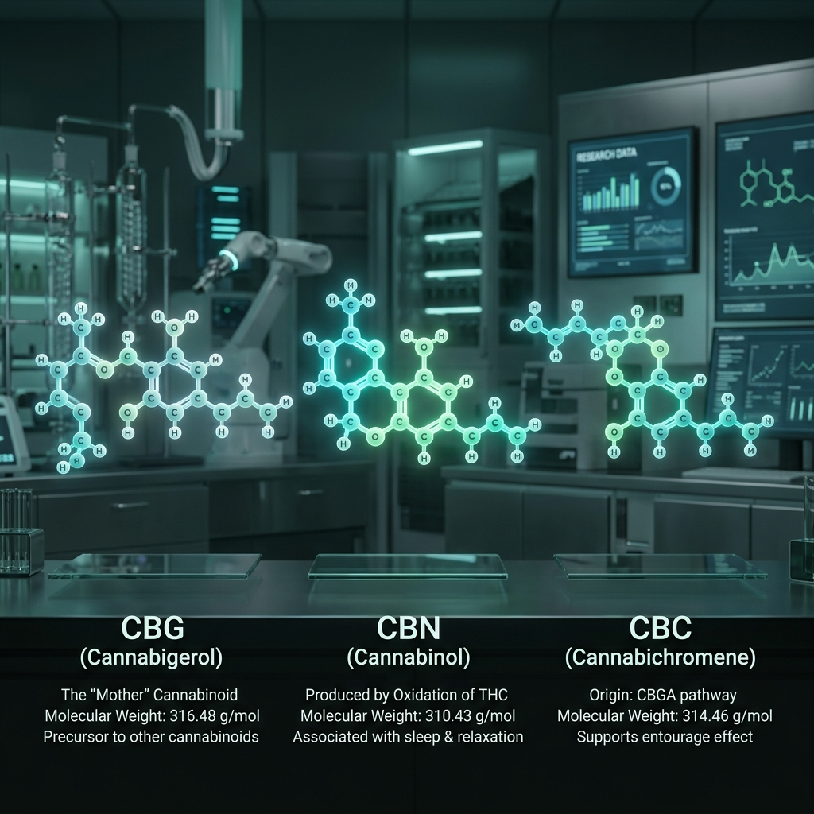
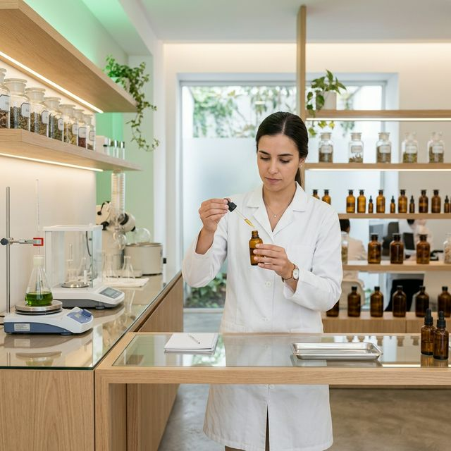

Como Fundar Uma Associação de Cannabis (2026)
O roteiro completo para constituição legal, técnica e agronômica à luz do Sandbox Regulatório 2026.
Conectamos pacientes a médicos e associações. Descubra como acessar seu tratamento natural, obter sua receita de forma fácil ou aprender a cultivar a sua própria medicina.
O passo a passo simplificado para você garantir acesso livre de preconceitos à Cannabis medicinal e reconquistar seu bem-estar.
Conectamos você aos melhores médicos especializados. Agende sua consulta para avaliar o uso dos fitocanabinoides (CBD/THC) para o seu quadro.
Descomplicamos o formulário de importação e autorização da Anvisa para que seu processo corra de forma rápida e segura na plataforma do Governo Federal.
Dificuldade de importar? Encontre Associações de Pacientes brasileiras para um acesso mais econômico, legal e humanizado ao óleo medicinal.
Aprenda a botânica básica para extrair sua própria medicina. Instruções sobre o cultivo caseiro legal via Habeas Corpus para quem busca independência total.
Como os compostos agem nos seus receptores (Sistema Endocanabinoide)? Muito além dos óleos, leia artigos para entender como o fitofármaco mapeia seu corpo.
Tire partido de todas as frações que a planta Hemp tem a oferecer: das sementes ricas em ômega 3 à suplementação no seu bem-estar diário.
Muito além da planta. Oferecemos um acompanhamento terapêutico 360° para potencializar seu tratamento, unindo a medicina fitocanabinoide com práticas ancestrais de autocuidado.
Acesse análises aprofundadas sobre canabinoides, legislação e o cenário da Cannabis medicinal no Brasil.
O roteiro completo para constituição legal, técnica e agronômica à luz do Sandbox Regulatório 2026.
O checklist completo para garantir seu salvo-conduto de cultivo medicinal com segurança jurídica.
Mais de 397 associações autorizadas na Alemanha. Entenda o que o Brasil pode aprender com o modelo europeu.
Protocolo de decisão clínica: quando escolher Full Spectrum, Broad Spectrum ou Isolado.

A mesma dose absorvida 6% ou 56% dependendo da via. Oral e inalação comparados.

Os compostos que determinam a superioridade do Espectro Completo sobre o isolado.

O novo marco que permite a personalização de doses e amplia o acesso no Brasil.

Como o novo ambiente da ANVISA permitirá o cultivo por associações.